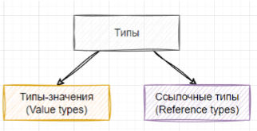
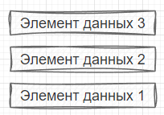
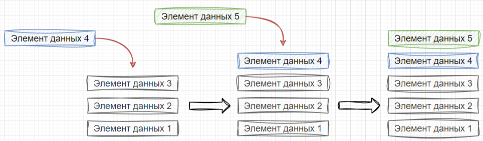
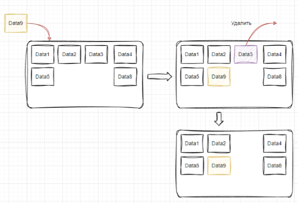
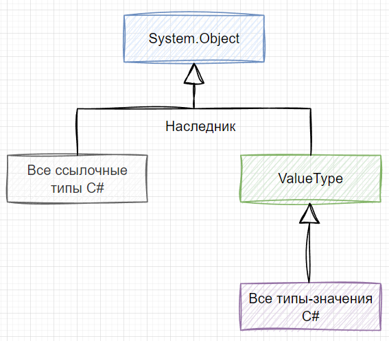
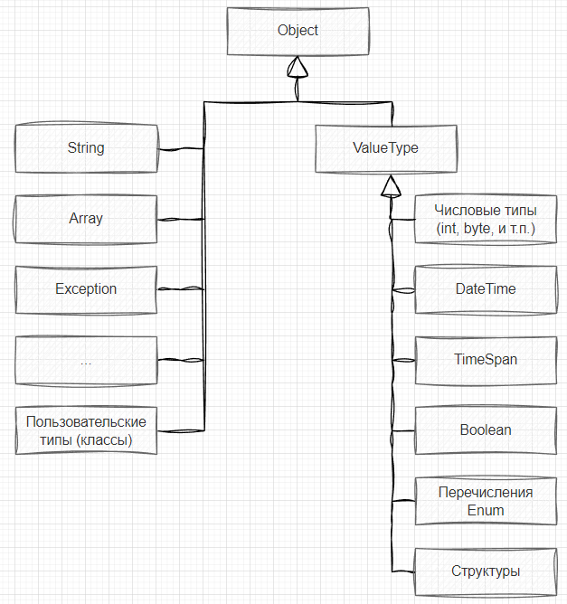

| Тема 3. Ссылочные типы и значимые типы. | ||
| Назад | ||
|
То, о чем мы с вами будет говорить на этом шаге, может показаться на первый взгляд сложным. Если сразу не стало всё понятно, вернитесь к этой информации чуть позже. Типы данных в C# можно разделить на типы-значения (value type) и ссылочные типы (reference type). В первую очередь они отличаются схемой наследования, местом размещения и представлением.  Для начала стоит сказать о том, что такое стек и управляемая куча. Стек – это область памяти процесса, особенность которой состоит в том, что участки из нее выделяются по принципу LIFO (last in – first out, последним пришёл – первым вышел) – первым доступным элементом является тот, что был помещен последним. Аналогией является стопка тарелок, в которой, для того чтобы добраться до какой-то из них, вам нужно снять сверху все те, что мешают достать нужную. Данные из стека удаляются предсказуемым образом, например, после завершения работы функции, все, что было размещено в стеке в процессе ее работы, будет уничтожено. Пусть у нас есть три элемента данных, которые хранятся в стеке:  Если мы хотим добавить в него ещё два элемента 4 и 5, то это мы сможет сделать, только разместив их сверху, по очереди:  Куча – это также область памяти процесса, но в отличие от стека, в ней нет жесткой структуры хранения. За уничтожение объектов, которые в ней размещены, в .NET отвечает сборщик мусора (garbage collector). В таких языках, как C / C++ за этим должен следить сам разработчик. 
Все типы в C#, как мы говорили выше, являются наследниками от  При создании экземпляров ссылочного типа в куче выделяется место, создаются и инициализируются дополнительные поля. В какой-то момент, занимаемая объектом память будет освобождена сборщиком мусора. Это произойдет в случае, если на него (объект) не будет ссылаться никакие другие объекты внутри приложения. Если бы все типы в языке C# были бы ссылочными типами, то производительность приложений во многих случаях значительно пострадала из-за того, что для каждого экземпляра типа нужно выделять память в куче, создать и инициализировать дополнительные поля, а потом удалять объекты при сборке мусора. Для часто используемых типов предусмотрена отдельная подгруппа, которую называют типы-значения (value type). Их особенностью является то, что экземпляры этих типов располагаются в стеке, что позволяет их быстро создавать и уничтожать. Фактически время жизни такой переменной определяется контекстом, в котором она объявлена. Из-за этой особенности снижается нагрузка на кучу и сборщик мусора. Последний просто не вызывается для экземпляров типов-значений.
Следует заметить, что если экземпляр типа-значения (например,
Типы-значения являются классами наследниками от Более подробно про эти типы мы поговорим в двух ближайших уроках этого модуля. Общая структура схемы наследования типов в C# представлена на рисунке ниже. Сразу скажем, что это схема неполная, но она дает представление об устройстве наследования типов.  |
||
| Конспект подготовлен Бакулиным А. М. 2012 год. | ||